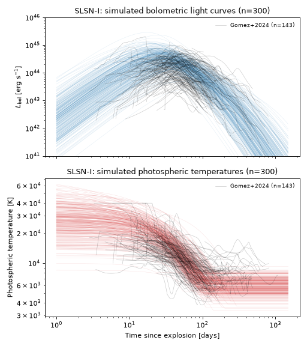
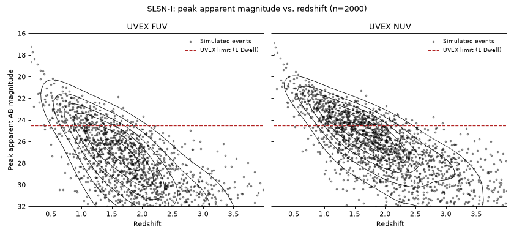
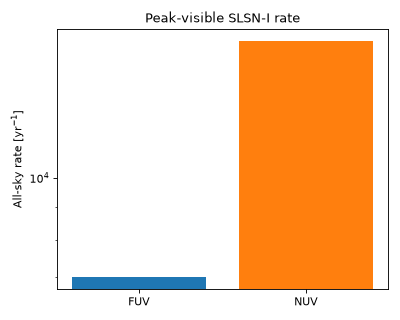

Superluminous Supernovae (SLSNe-I)#
Superluminous supernovae (SLSNe) reach peak luminosities roughly ten times higher than ordinary core-collapse or Type Ia supernovae and stay bright for weeks to months. The hydrogen-poor subclass, SLSNe-I, is the best studied: radioactive \(^{56}\mathrm{Ni}\) decay alone cannot supply enough energy to power most of these events, and their bright, blue, slowly-declining light curves are instead widely explained by the spin-down power of a newly formed, rapidly-rotating, strongly-magnetized neutron star (a magnetar) embedded in the expanding ejecta [1][2].
This population is implemented by MagnetarSLSNe,
pairing ArnettMagnetarSpindownSED with the
rate/duration metadata described below. Unlike the purely phenomenological SED shapes used
elsewhere in this package, this SED is a semi-analytic solution of the underlying diffusion
physics (Arnett[3], extended by Nicholl et al.[4] and
Wang et al.[5]), so it is grouped with the other detailed physical models.
Quick Facts#
Quantity |
Value |
Source |
Notes |
|---|---|---|---|
Rate |
\(R_\mathrm{CC}(z) = k h^2 \psi_\mathrm{UV}(z)\); SLSN-I \(1/3500\) of \(R_\mathrm{CC}(z)\) (\(\approx18\ \mathrm{Gpc^{-3}\,yr^{-1}}\) locally) |
Strolger et al.[6], Madau and Dickinson[7], Frohmaier et al.[8] |
Frohmaier et al.[8] measure a local ratio of SLSN-I to all core-collapse SNe of \(1/3500^{+2800}_{-720}\). Adopted as a constant fraction of the core-collapse rate, so it tracks the same star-formation history. |
Redshift limit |
\(z = 4\) |
– |
Set from an actual |
Duration |
600 days |
– |
Covers the rise (median \(\approx30\) d) and most of the decline. The bolometric light curve falls to \(10^{-3}\) of peak after a median of \(\approx540\) d (16th-84th percentile 250-1400 d, rest frame), so the slowest events’ faint tails are truncated by this window rather than fully simulated. |
SED Model#
Model Class: ArnettMagnetarSpindownSED
The SED model for the SLSNe-I population utilizes the standard Arnett-style diffusion[4] model driven by a magnetar spin-down power source.
The magnetar’s total rotation energy and spin-down timescale are[4]
and
We therefore adopt the engine power source
The resulting bolometric lightcurve, including leakage, is
where
is the photon diffusion time and
is the leakage parameter. We adopt the density-profile constant \(\beta=13.8\)[3]. The photosphere expands at the constant ejecta velocity \(v_\mathrm{ej}\), so its temperature follows the Stefan-Boltzmann law until it cools to a floor \(T_\mathrm{floor}\), after which it holds there (the photosphere then recedes rather than continuing to cool):
Parameter |
Symbol |
Prior |
Notes / Source |
|---|---|---|---|
|
\(P\) |
TruncatedLogNormal(\(\log_{10}(P/\mathrm{ms})\); mean=:math:log_{10}(3.0), \(\sigma\)=0.104; bounds \([0.7, 20]\) ms) |
Calibrated as a group with |
|
\(B_\perp\) |
TruncatedLogNormal(\(\log_{10}(B_\perp/10^{14}\,\mathrm{G})\); mean=:math:log_{10}(0.8), \(\sigma\)=0.192; bounds \([0.01, 10]\times10^{14}\) G) |
Calibrated as a group with |
|
\(M_\mathrm{ej}\) |
TruncatedLogNormal(\(\log_{10}(M_\mathrm{ej}/M_\odot)\); mean=:math:log_{10}(4.8), \(\sigma\)=0.152; bounds \([0.1, 100]\,M_\odot\)) |
Calibrated as a group with |
|
\(v_\mathrm{ej}\) |
TruncatedNormal(\(v_\mathrm{ej}/10^4\,\mathrm{km\,s^{-1}}\); mean=0.9, \(\sigma\)=0.3; bounds \([0.1, 3.0]\)) |
\(\approx9000\ \mathrm{km\,s^{-1}}\), from \(\sqrt{2E_K/M_\mathrm{ej}}\) at the posterior median \(E_K=3.9\times10^{51}\) erg, \(M_\mathrm{ej}=4.8\,M_\odot\) [4]; width chosen here. |
|
\(M_\mathrm{NS}\) |
Uniform(1.4, 2.2) \(M_\odot\) |
Fit-prior range [4]. |
|
\(\kappa\) |
Uniform(0.05, 0.2) \(\mathrm{cm^2\,g^{-1}}\) |
Fit-prior range [4]. |
|
\(\kappa_\gamma\) |
LogUniform(0.01, 1) \(\mathrm{cm^2\,g^{-1}}\) |
Narrower than the fit-prior’s full \(0.01\)-\(100\ \mathrm{cm^2\,g^{-1}}\) range: only a few events have late enough data to constrain \(\kappa_\gamma\), but those that do favour similarly low values (e.g. SN 2015bn, \(\kappa_\gamma\approx0.01\)) [4]. |
|
\(T_\mathrm{floor}\) |
TruncatedNormal(6000 K, \(\sigma\)=1000 K; bounds \([3000, 10000]\) K) |
Matches the fit prior exactly [4]. |
Simulated Light Curves#
The plot below draws 300 random parameter realizations from the priors above and shows the resulting bolometric light curves and photospheric temperatures. Overlaid lightcurves are from Gomez et al.[9], which provides a curated set of SLSN-I light curves from the literature, with bolometric luminosities derived from multi-band photometry.
(Source code, png, hires.png, pdf)
{kind=link}
{kind=link}

Observability Summary#
The light curve here has no single parameter that is exactly the bolometric peak time (\(L(t)\) is a numerically integrated diffusion solution), so each event’s peak apparent magnitude is found by searching a rest-frame time grid rather than evaluating at one closed-form epoch. Below are the redshifts \(z\) and corresponding bandpass peak apparent AB magnitudes \(m_\mathrm{AB}\) of 2000 simulated events drawn from the priors above, with the UVEX 1 Dwell limit of \(m<24.5\) overplotted. This justifies the \(z=4\) redshift limit adopted above.
(Source code, png, hires.png, pdf)
{kind=link}
{kind=link}

The anticipated rate of SLSNe-I detectable by UVEX at this limit is as follows, assuming that any event above the \(m<24.5\) limit is detectable, and that the population is isotropic and homogeneous in comoving volume out to \(z=4\):
(Source code, png, hires.png, pdf)
{kind=link}
{kind=link}
